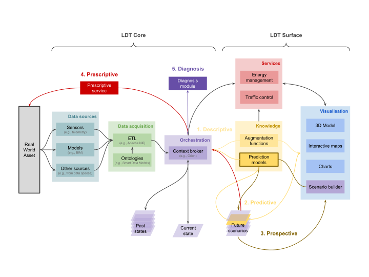
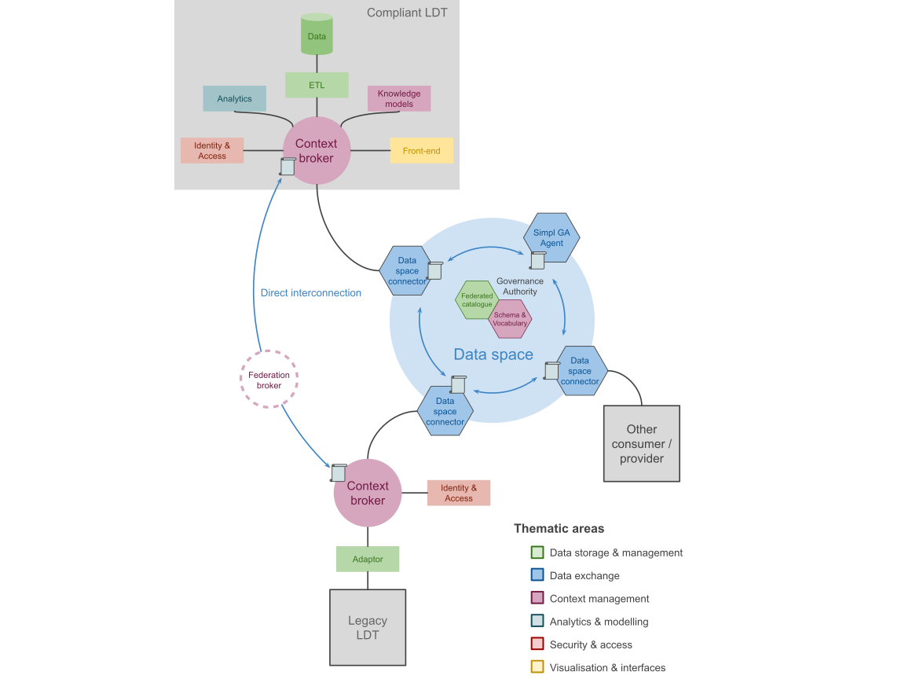

Technical Resources
On this page
- Technical Landscape - Understanding the ecosystem
- What is a Local Digital Twin? - Core concepts
- Example Implementations - See LDTs in action
- Reference Architecture - Technical architecture
- 📚 Technical Resource Library - Browse tools & standards
🎯 What you'll find here
These technical resources offer pilots and community stakeholders a curated overview of the standards, tools, frameworks, and implementations that permeate interoperable and scalable Local Digital Twin deployments in the LDT4SSC project.
Quick links:
- 📚 Technical Resource Library - Browse standards, tools, protocols and frameworks
- 📊 Technical Landscape Report - Technical overview of ecosystem
- 🏛️ Example Implementations - Real-world LDT projects
The resources guide you through the LDT ecosystem - from interoperability standards and data space protocols to context brokers, discovery services, and AI toolkits - helping pilots and applicants make informed technical choices across three work strands.
Work Strands Overview
The technical resources in this library support three interconnected work strands, each with different technical priorities:
WS1: Technical Interconnection of LDTs
Linking and scaling digital twins that are already in place
Focus on interoperability standards, data space connectors, federated catalogues, and context broker federation for connecting existing LDT implementations.
WS2: Creation of LDTs Based on Common Needs
Addressing shared urban or regional challenges (e.g., cross-border traffic, air pollution)
Emphasis on semantic data models, NGSI-LD context brokers, domain-specific ontologies, and collaborative data governance frameworks.
WS3: Adding New Advanced AI-Based Tools to existing LDTs
Integrating AI-driven, value-added services to enhance existing LDTs and new services to the LDTs Toolbox
Tools for AI/ML integration, predictive analytics, simulation platforms, and Testing and Experimentation Facilities (TEFs).
Technical Landscape
Understanding the technical ecosystem (click to expand)
The project's technical landscape is built on a foundation of open standards that ensure Local Digital Twins (LDTs) can easily connect, understand each other's data, and operate across cities and communities. At its foundation is a strong commitment to interoperability by design, aligned with European frameworks such as the European Interoperability Framework (EIF), Minimal Interoperability Mechanisms (MIMs Plus), and the EU's emerging regulatory environment for data, AI, and digital services. This landscape acknowledges the reality that communities operate diverse legacy systems - data platforms, dashboards, GIS environments, BIM/CIM models - and offers guidance on how they can evolve towards connected, sovereign, and sustainable digital infrastructures.
Complementing other European initiatives - including the DS4SSCC-DEP project, the EU LDT Toolbox, SIMPL Smart Middleware, and Gaia-X trust frameworks - the project provides pilots with a harmonised set of standards, protocols, and tools that enable seamless data sharing across sectors and borders. The initiatives outlined in the technical landscape aim at progressively developing local data platforms towards fully-fledged LDTs, aiming at interoperability, facilitating the deployment of data spaces through trust frameworks, discovery services, and usage-controlled data exchange. These data spaces can then interconnect through shared connectors to form a European-wide federation. This is the foundation upon which pilots can interconnect existing LDTs (WS1), develop and expand LDTs (WS2), and integrate advanced AI-driven capabilities (WS3).
At the operational level, the technical landscape points pilots to concrete, open technologies - such as NGSI-LD context brokers, DCAT/DCAT-AP metadata catalogs, ODRL for usage policies, and standardised APIs - to ensure that LDT services are discoverable, reusable, and portable across cities. Combined with AI and simulation technologies supported through Testing and Experimentation Facilities (TEFs), this ecosystem enables cities to move from isolated platforms to federated, trustworthy, and citizen-centric digital twins. Ultimately, the landscape envisions collaboration, innovation, and scaling for communities towards digital services that advance Europe's green and digital transitions.
The Technical Landscape Report
The Technical Landscape Report focuses on establishing the technical foundations necessary to support pilot projects within the Local Digital Twins for Smart and Sustainable Communities’ (LDT4SSC) open calls.
The Technical Landscape Report
What is a Local Digital Twin?
The concept of a Local Digital Twin (LDT) is inherently dynamic and its definition is continuously evolving. Within the LDT4SSC project, we therefore adopt a provisional definition that reflects our current perspective, objectives, and scope. It is intended to converge with the definition of an LDT in the MIM8: Local Digital Twins that describes interoperability in terms of the application domain of LDTs. This definition is intended as a working reference rather than a fixed one, and it could be refined over the course of the project.
In articulating this definition, we recognise that many cities and communities already operate mature Local Digital Twins, often built on architectural choices, technologies, or governance models that differ from those considered within this project. Such initiatives should not interpret the LDT4SSC definition as rendering their existing solutions out of scope or non-compliant by default. On the contrary, the project seeks to remain inclusive, valuing diverse implementations and learning from established practices, while providing a common conceptual framework.
Technical definition
A Local Digital Twin is a digital representation of physical assets, systems, or processes, in a defined local context (e.g., city, district, building, industry, port, airport). It leverages either historical data, near real-time data, or real-time data, and it enables visualisation, analysis, simulation, and reasoning services that support decision-making.
It aims to dynamically represent a defined observed geographical area to analyse, understand, anticipate, and simulate the effects of public policies, environmental hazards, climate change, development projects or disruptions. It supports strategic decision-making, consultation, foresight, and scenario design. It can include automated decision-making and execution (actuation). It can also incorporate other sources of data, including Building Information Models (BIM), Geographic Information Systems (GIS), and/or sector-specific models (mobility, climate, energy, etc).
Functional scope of a Local Digital Twin (click to expand)
At its core, a Local Digital Twin relies on a contextual and semantic data management approach, enabling the representation and interlinking of entities, attributes, and relationships across domains. This may be implemented using different architectural technologies, such as context management systems, knowledge meta-model, or equivalent solutions. Other components are additional, and they enable: integration of data (ETL), management of access rights to the twin's data and services (Identity), production of visualisations for tangible end-user data analysis, etc.
The components of the scope of an LDT that are circled with dotted lines (Policy and Catalog) are not essential to the Digital Twin but enable the interconnection with other Digital Twins. Policy describes the obligations and rights of both the data producer and the user; the former describes how a user can use the data at hand, and the latter says what they want to do with the data. A verification is then carried out using Open Digital Rights Language (ODRL) managed by the Eclipse Dataspace Components (EDC), SIMPL is in charge of enabling this. Catalogue enables the data cataloguing of one's data (exposing the metadata) as well as the consumption of data from other data catalogues for interconnection.
Capabilities of a Local Digital Twin (click to expand)

- Descriptive: Current (and past) states of the real-world asset – static and dynamic. Augmentation functions are responsible for extracting information out of the stored data and feeding it to live services or visualisation tools.
- Predictive: Extends the descriptive twin capability by providing predictions on the way the real asset could evolve in the future, using predictive models to envision a future scenario.
- Prospective: Conducts "what-if" analyses to evaluate the potential consequences of actions, extending the predictive model to multiple possible future scenarios.
- Prescriptive: Extends (or, in some cases, executes) the prospective capability with suggested actions on the real system to achieve a given objective based on the analysis.
- Diagnostic: Explains situations or alerts about deviations from expected conditions. Capability for evaluating what happened, especially in the case of a malfunction of the real asset.
Example implementations
Perugia (IT): an interoperable urban platform
The city of Perugia, in Italy, has adopted some of the resources described in this document to make their own data structure interoperable. The harmonisation of the data was conducted using the FIWARE stack, more specifically a solution called WiseTown. The project integrated the city’s software infrastructure, managing large amounts of data from different sources, such as geographical information systems, satellite images, IoT sensors, etc. The use of Smart Data Models allowed for semantic interoperability, while the use of a context broker allowed for the integration of the orchestration onto the NGSI-LD standards. The result was a system compliant with the European standards, that transformed the city’s digital infrastructure enabling a participatory and integrated approach to facilitate decision-making.
In addition to the Smart Data Models, WiseTown used an NGSI-LD-compliant context broker, Orion-LD, chosen as the messaging and context information manager. For security infrastructure, the solution was FIWARE’s Keyrock. Used for a wide range of IoT Agents, the FIWARE IDAS solution was also adopted. Figure 8 provides a high-level overview of the adopted architecture, while Figure 7 shows a unifying decision-making dashboard that resulted from this collaboration.
The decision to rely on FIWARE resources and NGSI-LD standard allowed for the integration of heterogeneous data (GIS, IoT, registers, third-party applications), as well as the implementation of a standardised and documented API. It created an interoperable platform aligned with European recommendations, promoting reuse and scalability. Several use-cases have been deployed, including: mobility and parking (real-time monitoring of traffic and parking space availability); environment and quality of life (monitoring of air pollution levels, noise pollution and public lighting); green space management (data monitoring to improve planning and maintenance); energy optimisation (management scenarios for public lighting or the integration of renewable energies); citizen participation (mobile applications and crowd-planning tools enabling residents to report problems, monitor their resolution and contribute to development projects).
What makes Perugia's experience particularly remarkable is its ability, as a medium-sized city, to mobilise interoperable infrastructure and implement inter-municipal data governance. The use of open standards and the implementation of an operational digital twin position Perugia as a model for medium-sized cities in Europe. It demonstrates that interoperability ‘by design’, combined with shared data governance, can be a powerful impulse for innovation and transformation for local authorities beyond the major cities alone.
To know more...
A video presentation of the project: https://www.youtube.com/watch?v=ZtXkcPQSGiU
Feedback from the Fiware ecosystem: https://www.fiware.org/2021/11/15/perugias-digital-transition-to-smart-city-powered-by-fiware-technology/
Zurich (CH): a dynamic 3D twin of the built environment
The city of Zurich, in Switzerland, faces rapid population growth, expecting to reach 520 thousand residents by 2040. With the rise in population, it recognised the need for innovative city planning, incorporating recent technological tools in its existing planning support systems. To go beyond static planning, with limited participation and capacity for adaptations, the city launched the Digital Twin of Zurich. It consists of a dynamic 3D spatial model to support evidence-based decision making. The twin integrates real-time data, 3D models, and analytical tools to enable the simulation of urban phenomena, such as climate impacts, densification, and mobility.
The twin evolved from Zurich’s 3D City Model, initially developed in 2011 and managed by the city’s GIS department. The model encompasses detailed topography, buildings, bridges, vegetation, in various levels of detail. These datasets formed the base for further data integration, for instance linking cadastral, environmental, and planning information under a governance framework aligned with Switzerland’s Federal Act on Geoinformation (GeoIG). The local government also made the data publicly available in the city’s Geoportal, and an interactive visualisation of the twin’s components is done by the means of Zurich Virtuell.
Zurich’s digital twin has enabled integration of several planning domains. It supports the Municipal Development Plan, showing the current building development, the allowed development, and possible scenarios; urban climate analysis, modelling airflow and heat mitigation strategies; or even architectural competitions, where Augmented Reality (AR) and web-based tools are planned to allow juries to assess digital submissions interactively. Moreover, participatory initiatives were also put in place, such as “Minecraft Zurich”, which allows citizens to design and submit their own ideas, lowering barriers to political participation.
Zurich's example exemplifies a mature, multi-purpose data platform for data-driven urban governance. It combines spatial accuracy and open access principles, enhancing the city's ability to simulate, visualise, and discuss planning scenarios, with the collaboration of the population. Further developments envisioned by the city include bettering their interconnected 3D data, with faster updating for instance; systematic recording of urban furniture; better interconnection of BIM and GIS world; building a 3D utility cadaster, among others. The Zurich example demonstrates how a data platform can evolve towards a fully-fledged digital twin, with an operational decision-support system, allowing citizen participation to foster sustainable urban growth.
Differdange (LU): clean energy and mobility
The city of Differdange, in Luxembourg, is well-known for its industrial heritage and green spaces, and actively pursues net-zero carbon emissions through innovative renewable energy initiatives. In the fields of energy and mobility, LIST in collaboration with the city’s experts in the context of the CitCom.ai project have developed an LDT aiming at integrating electric vehicle (EV) infrastructure and renewable energy generation. More specifically, the LDT leverages information on charging points, buildings, and solar panels. Understanding the balance between renewable energy production and energy demand in charging stations is essential for the city’s sustainability goals. The implementation includes data collection and telemetry emulators, spatio-temporal and graph databases, DT cloud solutions, and interactive maps and dashboards. Several analytical models were produced from the integrated data, and are used to both produce synthetic telemetry, and predict telemetry depending on the parameters in a simulation.
The current effort of the Differdange LDT is in the direction of adopting interoperable, open-source solutions, in-line with the resources presented in this document. This is intended to increase their adherence to the MIMs Plus framework. For that to happen, the team is currently producing a gap analysis, to assess how far the current implementation is from an interoperable one, possible to be connected to a data space, to be further integrated with other solutions and assets. The first step forward is the adoption of a NGSI-LD-compliant context broker, particularly from the ones cited in this document (Stellio, Orion-LD, Scorpio). Secondly, to make their data interoperable, they plan to adopt domain-specific ontologies from the Smart Data Models framework. More specifically, they are looking into the Buildings data model from the Smart Cities framework, as well as the Photovoltaic Device and the Photovoltaic Measurement from the Smart Energy one. In their case, the effort is not to have a virtualisation layer to transform the data, but to actually overhaul the data structure.
The example implementation of Differdange shows a working LDT that currently caters to the city and its partners’ sustainability efforts. It already provides an impressive level of insights on current and future trends of sustainable energy production and EV charging demands. It nonetheless recognises the importance of interoperability, and the team is actively pursuing a stricter compliance to standards and frameworks that allows for further interconnection. This could help not only the city’s officials and their citizens in the delivery of a more accurate service, but other initiatives throughout Europe that might undergo similar kinds of societal challenges and could leverage from the collective learning this experience has brought about.
Antibes (FR): an indoor descriptive Local Digital Twin with 3D implementation
In enclosed spaces, indoor air quality is greatly affected by carbon dioxide (CO₂) levels, which play an important role in the comfort and health of occupants. Excessively high CO₂ concentrations can cause symptoms such as fatigue, headaches and difficulty concentrating, as well as unpleasant odours. In addition, local or national regulations may require an assessment of ventilation systems and the implementation of pollutant control measures by an accredited body or self-assessment.. Continuous measurement of CO2 concentration is recommended in support of this decree in order to reduce health risks and increase occupant comfort.
To reduce CO2 levels, temperature, relative humidity, and levels of volatile organic compounds (VOCs), CO, allergens and fungi in enclosed spaces, the most effective solution is natural ventilation by opening windows and doors to create a draught. Concerned about the well-being of its teachers and pupils, Antibes Town Hall (Logistics and Education Departments) and EGM have therefore equipped the teaching and living spaces at the Jean Moulin School with sensors that continuously measure CO2 levels, temperature and relative humidity.
A total of 30 Nexelec Carbon sensors were deployed in 14 primary classrooms, 6 nursery classrooms, 1 activity room, 2 dormitories and 1 large dining hall. They are connected to the Orange LoRaWAN network, and the data collected is then centralised on an EGM TWIN·PICKS platform (FIWARE architecture with Stelio context broker) where, among other things, the school air confinement index (ICONE) is calculated to assess the degree of air confinement in a room. This is based on continuous CO2 measurement over a school week at 10-minute intervals and calculated exclusively for periods when the room is occupied.
The city of Antibes, which has a 3D representation of its territory, wanted to feed the ICONE index information into this representation, thereby enabling better visualisation of the data and creating a digital twin of the territory. To do this, the temporal data is retrieved directly from the NGSI-LD API by the 3D visualisation tools Terra Explorer and Césium.
Reference architecture
We provide a possible high-level architecture implementation for achieving the desired interconnection between existing LDTs, scope of WS1. Pilots are expected to have a multitude of possible implementations of LDTs internally, so we focus on providing a generic interconnection architecture. To possible internal architectures non-compliant a priori with open standards and open software, we refer to as a "legacy LDT" in the architecture diagram below. Compliant LDTs are expected to have a context broker, responsible for assuring interoperability, among other components.

As part of WS1 requirements, pilots are expected to have implemented a SIMPL Governance Authority Agent, which guarantees a federated catalogue and assures the schema and vocabulary used by the interconnected LDTs. A context broker can be linked to another one by the means of a federation broker, or via a data space. In case the connection is done via a data space, a data space connector must be deployed (unless using a SIMPL Agent, which includes an EDC connector). This allows other consumers or providers to be onboarded on the same data space, ensuring access policies and also interacting with the interconnected LDTs, guaranteeing a sustainable interoperable environment.
📚 Technical Resource Library
How to use this library
Filter resources by Layer, MIMs Plus category, and Scope. Use the search bar to find specific standards or tools, and suggest new resources using the button below.
The technical resource library is categorised by layer (according to the LDT-Toolbox), by category (whether standard, protocol, framework, or tool/implementation), and by scope (whether relevant for data spaces, AI for smart cities, interoperability, or LDTs).
Loading resources...
Suggest a Resource
Know of a technical resource that should be included in our database? Share it with us using the form below!